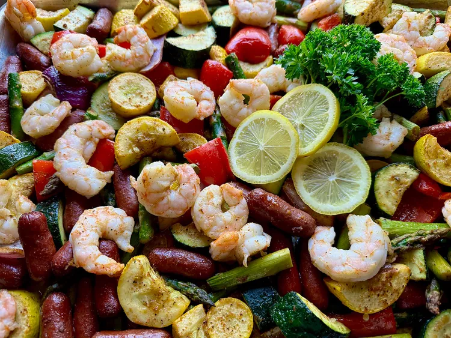

Home
Cajun Shrimp Sausage

Description
You might call this Cajun shrimp and sausage sheet pan dinner a shrimp boil without the water, or maybe a gumbo without the roux. With so many vegetables, a simple green salad will complete this dinner nicely, along with some crusty French bread.
Ingredients
- 1 pound asparagus spears, cut into thirds
- 1 pound yellow squash, cut into 1-inch pieces
- 1 pound zucchini, cut into 1-inch pieces
- 1/2 medium red onion, cut into 1-inch pieces
- 1 pepper red bell pepper, cut into 1-inch pieces
- 3 tablespoons olive oil, divided
- 2 tablespoons plus 1 teaspoon low-sodium Cajun seasoning, or to taste, divided
- 1 pound cocktail wieners
- 1 pound peeled, deveined shrimp without tails
- fresh parsley and fresh lemon slices for garnish (optional)
Steps
- Preheat the oven to 400 degrees F (200 degrees C)
- line a sheet pan with parchment paper or foil.
- Add asparagus, yellow squash, zucchini, onion, bell pepper, 2 tablespoons olive oil, and 2 tablespoons Cajun seasoning; toss until vegetables are well coated.
- Stir in cocktail wieners, and spread everything evenly on the prepared pan.
- Roast in the preheated oven for 10 minutes.
- Dry shrimp with paper towels and place in a bowl. Toss with remaining 1 tablespoon olive oil and 1 teaspoon Cajun seasoning.
- Stir vegetables and sausages, and place oiled and seasoned shrimp on top.
- Roast until vegetables are fork tender and shrimp is just opaque, about 10 minutes more. Shrimp will continue to cook after the pan is removed from the oven. Garnish with fresh parsley and lemon slices.